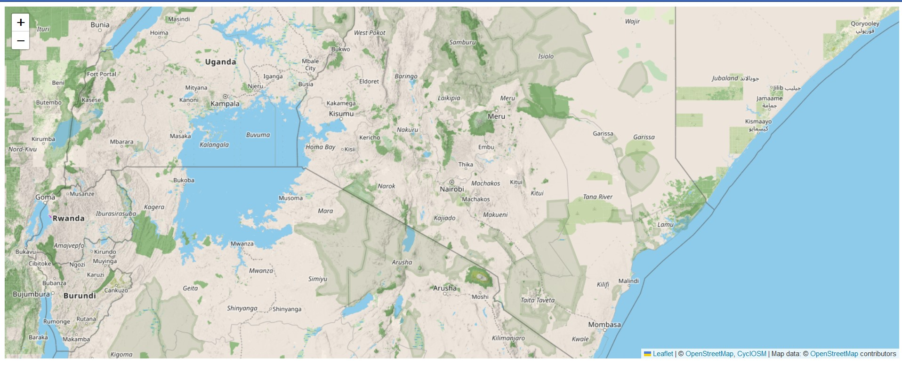
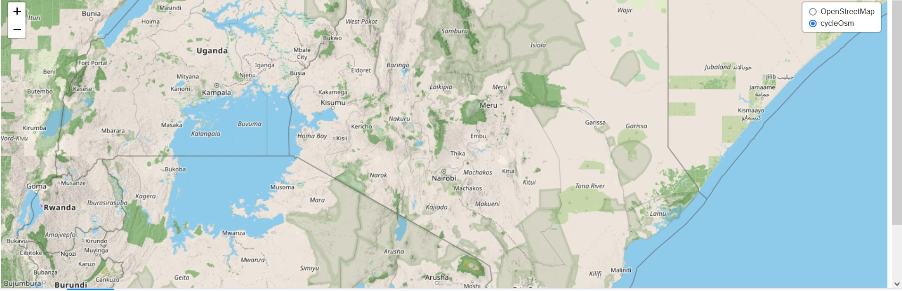
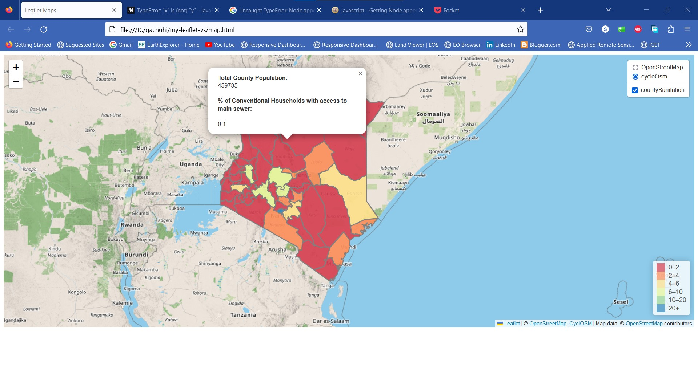
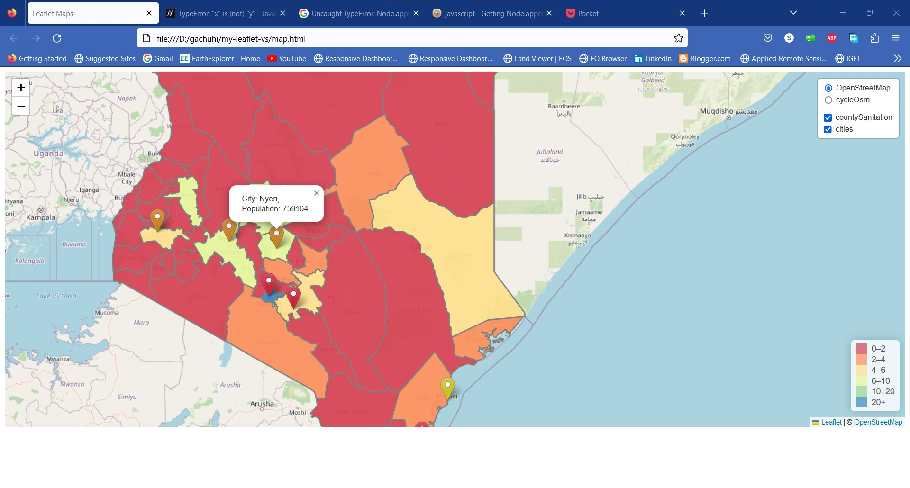
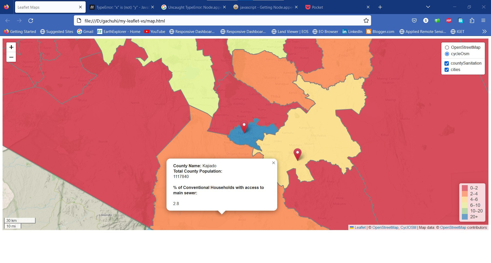

Chapter 8 Layer groups and controls
8.1 Purpose of layer groups and controls
Sometimes, one may wish for their webmap to consist of several baselayers or overlay maps at any given time. Suppose you want your Leaflet to have two basemap layers, with the option of switching to either, and additionally, an overlay, how would you proceed?
8.2 Set up the basemaps
In order to create controls, we have to set the control variables in JavaScript Objects. Thereafter, the L.controls.layers class is used to parse the object values to the Leaflet map and create a UI control. To demonstrate this, open a new JavaScript file and name it groups_controls.js. Insert the following code which will save our basemaps to the respective variables of osm and cyclOSM.
var osm = L.tileLayer('https://tile.openstreetmap.org/{z}/{x}/{y}.png', {
maxZoom: 19,
attribution: '© <a href="http://www.openstreetmap.org/copyright">OpenStreetMap</a>'
});
var cyclOSM = L.tileLayer('https://{s}.tile-cyclosm.openstreetmap.fr/cyclosm/{z}/{x}/{y}.png', {
maxZoom: 20,
attribution: '<a href="https://github.com/cyclosm/cyclosm-cartocss-style/releases" title="CyclOSM - Open Bicycle render">CyclOSM</a> | Map data: © <a href="https://www.openstreetmap.org/copyright">OpenStreetMap</a> contributors'
}); // the CyclOSM tile layer available from Leaflet servers
We will pass the above two variables of osm and cyclOSM to the L.map class which has an option of layers in which one can parse the layers they wish to be displayed on the map.
var map = L.map('myMap', {
layers: [osm, cyclOSM]
}).setView([-1.295287148, 36.81984753], 7);
However, that will only add the first basemap variable that appears –that for osm and blocking out that of cylcOSM. This is shown below.
knitr::include_graphics(rep('D:/gachuhi/my-leaflet/images/no-control.jpg'))
8.3 Creating the controls
However, in order to give cyclOSM a fair chance, we need to store them in an object say var basemaps and parse it to L.controls.layer which shall create a checkbutton for each basemap. The below code does just that.
// Set object for the basemaps
var basemaps = {
"OpenStreetMap": osm,
'cycleOsm': cyclOSM,
}
L.control.layers(basemaps).addTo(map);
This is the result you get.
knitr::include_graphics(rep('D:/gachuhi/my-leaflet/images/controls.jpg'))
8.4 Adding overlay maps
Now we have seen how to add two or more basemaps to Leaflet and make all of them appear in the layer control. As was the case for the basemaps variable, it can also be replicated for the overlay maps as well.
The first overlay we would like to create is a choropleth map displaying the percentage of conventional households with access to main sewers as per the 2019 census. For simplicity purposes and to bypass errors we faced, we shall reuse the Ajax plugin for fetching GeoJSON files from online servers. As a reminder, we load Ajax into leaflet by inserting it to the following <script> tags into our map.html.
<script src="leaflet-ajax-gh-pages\dist\leaflet.ajax.js"></script>
<script src="leaflet-ajax-gh-pages\dist\leaflet.ajax.min.js"></script>
<script src="leaflet-ajax-gh-pages\example\leaflet.spin.js"></script>
<script src="leaflet-ajax-gh-pages\example\spin.js"></script> Using fetch API to load the json file brought up several errors requiring out-of-the-box thinking to resolve, but using the alternative Ajax plugin was a safe landing. The following chunks of code will add the color function and styling for our countrywide sanitation map. The resulting coloring function shall be passed to the Ajax function.
//// Adding some color
function getColor(d) {
return d > 20 ? '#3288bd' :
d > 10 ? '#99d594' :
d > 6 ? '#e6f598' :
d > 4 ? '#fee08b' :
d > 2 ? '#fc8d59':
'#d53e4f';
}
// Function for setting color (using arrow function)
var style = ((feature)=> {
return {
fillColor: getColor(feature.properties.Human_waste_disposal),
weight: 2,
opacity: 1,
color: 'gray',
fillOpacity: 0.9
}
})
Now let’s add the overlay map that will display the population’s accessibility to main sewer sanitation services. Spoiler alert: the statistics are quite grim.
// Adding the first overlay - map of household access to main sewer
var countySanitation = new L.geoJson.ajax("https://raw.githubusercontent.com/sammigachuhi/geojson_files/main/counties_sanitation.json", {
style: style
})
.bindPopup(function (layer) {
return `<b>County Name: </b> ${layer.feature.properties.ADM1_EN} <br>
<b>Total County Population: </b><br>
${layer.feature.properties.County_pop.toString()} <br><br>
<b>% of Conventional Households with access to main sewer: </b><br><br>
${layer.feature.properties.Human_waste_disposal.toString()}`
}).addTo(map);
Let’s add an accompanying legend for the above map. If you worked through Chapter 7 that dealt with interactive choropleths, some of the below code should be very familiar.
// Create a legend
var legend = L.control({position: 'bottomright'});
legend.onAdd = function (map) {
var div = L.DomUtil.create('div', 'info legend'),
grades = [0, 2, 4, 6, 10, 20],
labels = [];
// loop through our density intervals and generate a label with a colored square for each interval
for (var i = 0; i < grades.length; i++) {
div.innerHTML +=
'<i style="background:' + getColor(grades[i] + 1) + '"></i> ' +
grades[i] + (grades[i + 1] ? '–' + grades[i + 1] + '<br>' : '+');
}
return div;
}
legend.addTo(map);Now set an object to hold one of our two overlay maps.
var overlays = {
'countySanitation': countySanitation,
}
Finally parse it to the L.controls.layer class.
// Add layer controls
L.control.layers(basemaps, overlays).addTo(map);knitr::include_graphics(rep('D:/gachuhi/my-leaflet/images/controls-overlay.jpg'))
If you click in any one of the counties, you will see popups appear.
There is one more overaly we will add to our display to bring our experimentation with layer controls back full circle. Remember the GeoJSON of our cities variable? Let’s call it back to action. Load the custom icon markers first that will differentiate the populations of our cities.
// Color icons
// Yellow Icon
var yellowIcon = new L.Icon({
iconUrl: 'https://raw.githubusercontent.com/pointhi/leaflet-color-markers/master/img/marker-icon-2x-yellow.png',
shadowUrl: 'https://cdnjs.cloudflare.com/ajax/libs/leaflet/0.7.7/images/marker-shadow.png',
iconSize: [25, 41],
iconAnchor: [12, 41],
popupAnchor: [1, -34],
shadowSize: [41, 41]
});
// Orange Icon
var orangeIcon = new L.Icon({
iconUrl: 'https://raw.githubusercontent.com/pointhi/leaflet-color-markers/master/img/marker-icon-2x-orange.png',
shadowUrl: 'https://cdnjs.cloudflare.com/ajax/libs/leaflet/0.7.7/images/marker-shadow.png',
iconSize: [25, 41],
iconAnchor: [12, 41],
popupAnchor: [1, -34],
shadowSize: [41, 41]
});
// Red Icon
var redIcon = new L.Icon({
iconUrl: 'https://raw.githubusercontent.com/pointhi/leaflet-color-markers/master/img/marker-icon-2x-red.png',
shadowUrl: 'https://cdnjs.cloudflare.com/ajax/libs/leaflet/0.7.7/images/marker-shadow.png',
iconSize: [25, 41],
iconAnchor: [12, 41],
popupAnchor: [1, -34],
shadowSize: [41, 41]
});
Let’s load the cities GeoJSON with its icons.
var cities = L.geoJson.ajax("https://raw.githubusercontent.com/sammigachuhi/geojson_files/main/cities-geojson2.geojson.txt", {
pointToLayer: function (feature, latlng) {
if (feature.properties.Population <= 250000) {
return L.marker(latlng, {
icon: yellowIcon
});
} else if (feature.properties.Population <= 800000) {
return L.marker(latlng, {
icon: orangeIcon
});
} else {
return L.marker(latlng, {
icon: redIcon
});
}
}
}).bindPopup(function (layer) {
return `City: ${layer.feature.properties.City},<br>
Population: ${layer.feature.properties.Population}`;
}).addTo(map);
Add the cities variable as one of the keys to our overlays variable and finally parse the overlays object to L.control.layers.
// Set object for the overlay maps
var overlays = {
'countySanitation': countySanitation,
'cities': cities
}
// Add layer controls
L.control.layers(basemaps, overlays).addTo(map);
In the previous chapter, we ended by saying that we strive to make our choropleths map challenge rather than merely inform. This looks like a sketchy map, but it shows the discrepancy of access to basic sanitation services in a large portion of the population. Sanitation matters forever be sensitive, but the true barometer of any civilization is its sanitation.
Finally, it seems changing the position of the L.controls.layer from its default top-right position is impossible. For example, setting the position to left, in the L.controls.layer(basemap, overlaymap, {position: 'topleft'}) results in the UI layers control disappearing completely off the map. This seems to be like a bug yet to be reported.
knitr::include_graphics(rep('D:/gachuhi/my-leaflet/images/controls-all.jpg'))
8.5 Add a scale bar
Scales are one of the key elements of any map. One may wonder what’s their use in a webmap, but they are useful in estimating size and length of features. Adding a small reactive scale will not hurt!
// Add scale
L.control.scale({position:'bottomleft'}).addTo(map);knitr::include_graphics(rep('D:/gachuhi/my-leaflet/images/controls-scale.jpg'))
All the files and scripts used in this chapter can be accessed here.
8.6 Summary
Unlike paper maps, webmaps provide us the ability to include several basemaps and overlays all in one platform. Here’s is what you have learnt from this chapter.
Several basemaps and overlays can be parsed into Leaflet by holding the basemap and overlay variable names in a JavaScript dictionary object.
To create a layers control, parse the JavaScript object containing the basemap and overlay names to the
L.control.layers()class.GeoJSON features can also be parsed to the layer control. All that is needed is to save the function calling the GeoJSON file into a variable. For example, the Ajax function
var citieswas parsed to theL.control.layers()class.Scales are useful for size and length estimation, even in webmaps. Leaflet provides the
L.control.scaleclass to add custom scales to your webmap.